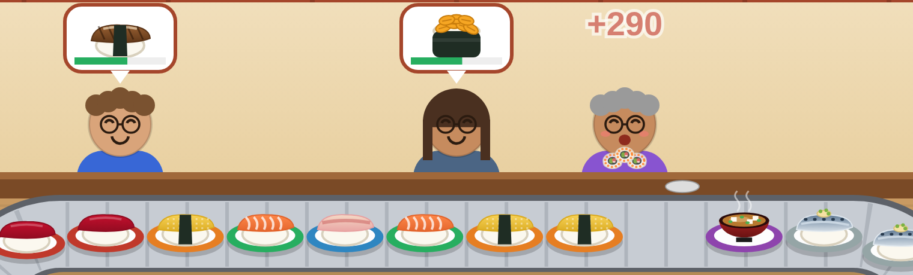
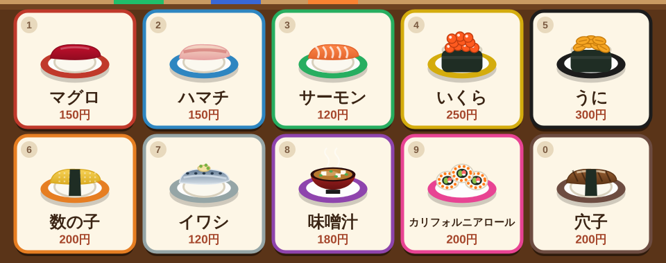
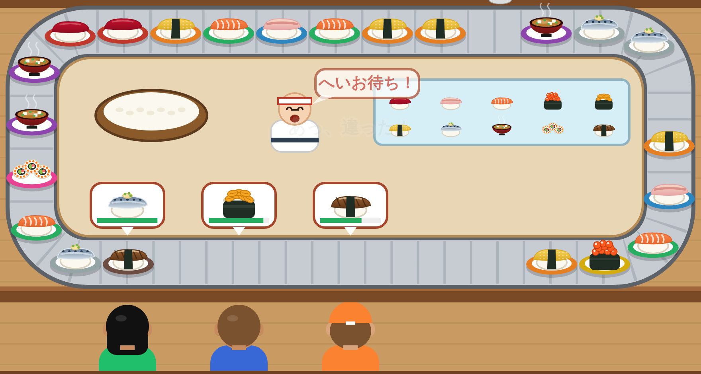
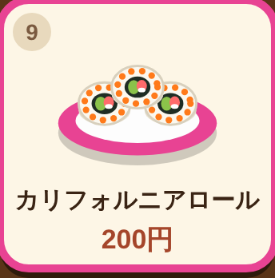

基本の流れ
-
1注文を見る
お客さんの頭の上の吹き出しに食べたい寿司が出ます。吹き出しの下のバーは待ってくれる時間。緑→黄→赤と減っていきます。
手前のカウンターのお客さんは後ろ姿なので、注文はレーンの内側に出ます。

-
2ネタのボタンを押す
画面下のネタのボタンを押すと、板前さんが「へいお待ち！」。その寿司を食べたいお客さんの前のレーンに、自動で皿が置かれます。
同じ寿司を待っている人が何人かいたら、一番待たせているお客さんが優先です。

-
3レーンで届ける
お客さんが取れるのは目の前に流れてきた皿だけ。食べたい寿司なら、そのまま取って食べてくれます。
目の前にもう皿があるときは、その後ろの空いているところに置かれます。レーンが混んでいると届くまで時間がかかります。

-
4間違えた皿は流れていく
誰も注文していない寿司を出すと、皿はそのまま回転寿司として流れ続けます。あとから来たお客さんがその寿司を頼めば、取ってもらえることも。
ただし、2周しても取られない皿は廃棄（−20円）です。

ルール
| 営業時間 | 90秒。時間がたつほどレーンが速くなり、お客さんも増えていきます。 |
|---|---|
| お客さん | 奥のカウンター5席・手前のカウンター5席、最大10人。食べ終わると、また注文するか帰ります。 |
| 怒って帰る | 待ち時間のバーがなくなると「もう帰る！」。画面右上の「怒」マークが増えます。 |
| 閉店 | 5人怒らせると、その時点で閉店（ゲームオーバー）です。 |
| レーンがいっぱい | 空いているところがないと皿を置けません。間違えた皿をためないようにしよう。 |
売上の計算
| 寿司の値段 | お客さんが取った寿司の値段がそのまま売上になります（120〜300円）。 |
|---|---|
| 早出しボーナス | 待ち時間が多く残っているほど最大+100円。 |
| コンボ | 続けて提供すると、2コンボ目から +20円ずつアップ。間違えたり、お客さんを怒らせるとリセット。 |
| 廃棄 | 2周して誰にも取られなかった皿は −20円。 |
| ランキング | トップ10に入ると名前を登録できます。記録はランキングページで見られます（このブラウザに保存）。 |
| 称号 | 見習い → 一人前（2,500円〜）→ 板前（6,000円〜）→ 大将（10,000円〜）→ 伝説の大将（15,000円〜） |
操作方法
スマホ・タブレット：ネタのボタンをタップ。縦持ちでは見やすい縦長の画面になります。
パソコン：クリック、またはキーボードで操作できます。
1マグロ
2ハマチ
3サーモン
4いくら
5うに
6数の子
7イワシ
8味噌汁
9カリフォルニアロール
0穴子
MBGM ON/OFF
P一時停止
Enter開店／もう一度
画面右上の「❚❚」ボタンで一時停止。BGMのON/OFFは一時停止画面で切り替えられます。
上達のコツ
赤いバーから先に
同じ寿司を待つ人が複数いても、自動で一番待っている人に届きます。迷ったら赤いバーのお客さんの注文から出そう。
レーンの流れを読む
上の列は左→右、下の列は右→左に流れます。前に皿が詰まっていると届くのが遅れます。
間違いは連打しない
間違えた皿はレーンをふさぎ、コンボも途切れます。押す前にもう一度吹き出しをチェック。
高いネタはチャンス
うに（300円）やいくら（250円）の注文はすぐに出して、コンボを伸ばそう。